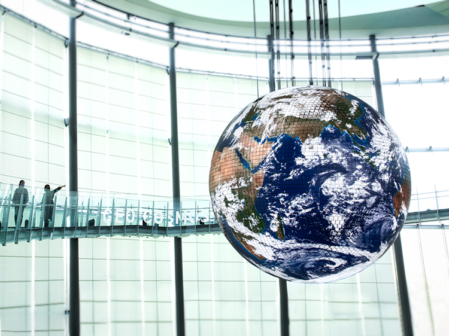
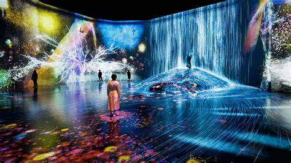
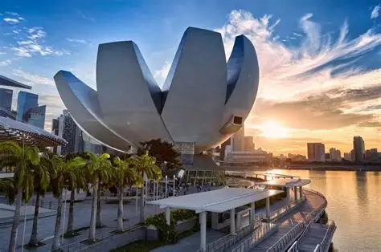
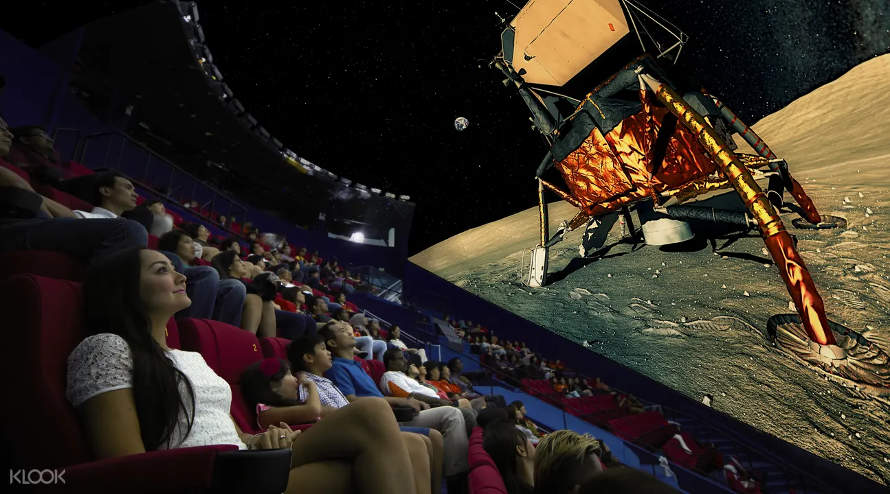
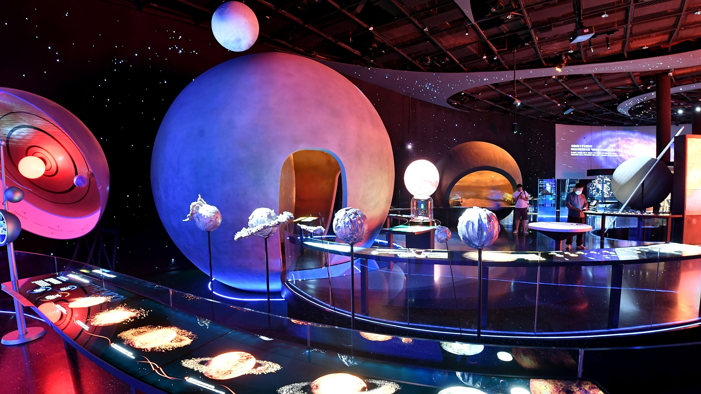
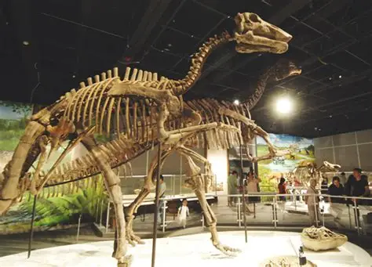
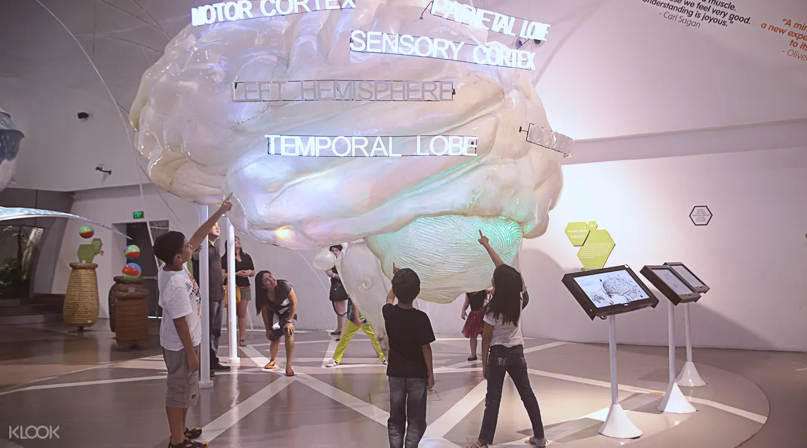
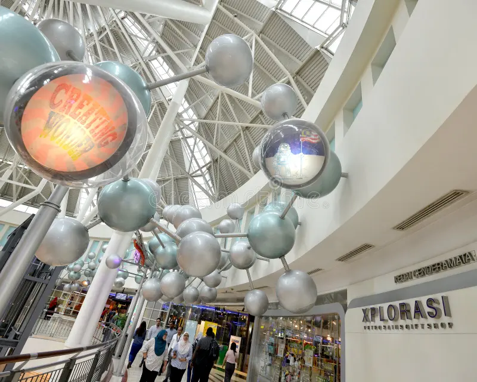
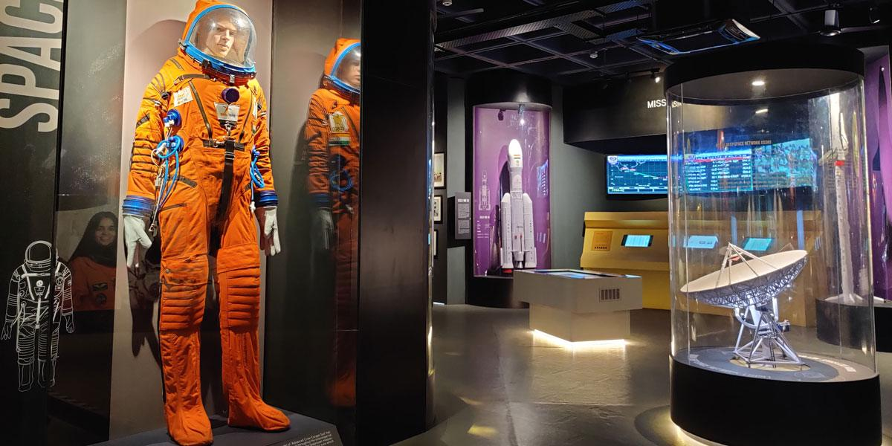
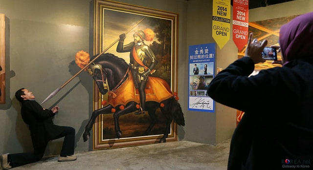

Miraikan — National Museum of Emerging Science & Innovation
Tokyo, Japan

A leading hands-on science museum that explores robotics, space, Earth science and future tech. Famous for its large hanging globe (Geo-Cosmos) and interactive exhibits.
Official site
Recommended for curious visitors who want demonstrations, interactive displays and talks about cutting-edge science and robotics.
teamLab Planets / teamLab Borderless
Tokyo, Japan

Immersive digital-art museums where installations react to visitor movement — wading pools, interactive light-rooms, and 'sketch-to-life' displays.
Official site
Expect multisensory rooms that change as people move through them — great for photography and experiential art.
ArtScience Museum (FutureWorld)
Singapore

Blends art, science and technology with interactive digital installations — includes the popular "FutureWorld" exhibitions created with teamLab.
Official site
A family-friendly spot with ever-changing themed exhibitions that invite physical and digital interaction.
Science Centre Singapore
Singapore

Large science museum with interactive galleries, KidsStop (for young kids), snow chamber, and rotating hands-on exhibits about physics, biology and technology.
Official site
Ideal for kids and school groups — plenty of tactile exhibits and live demonstrations.
Shanghai Science and Technology Museum
Shanghai, China

One of China’s biggest interactive science museums — exhibits span space, robotics, natural history and immersive theaters (IMAX/4D).
Official site
Good mix of hands-on experiments, large-scale displays, and educational shows.
Hong Kong Science Museum
Hong Kong

Features hundreds of interactive exhibits (many hands-on), special science shows, and rotating family-oriented exhibitions.
Official site
Well known for mechanical and physics exhibits that invite experimentation.
The Mind Museum
Taguig, Philippines

A modern science museum with over 250 interactive exhibits across multiple galleries, plus planetarium and hands-on demonstrations.
Official site
A top destination in the Philippines for STEM education, designed to make science accessible and fun for families.
Petrosains, The Discovery Centre
Kuala Lumpur, Malaysia

Interactive science discovery centre located in KLCC (near the Petronas Towers) with hands-on exhibits about energy, the environment and technology.
Official site
Great for families and school groups; many interactive displays and themed learning trails.
Nehru Science Centre
Mumbai, India

India’s largest interactive science centre — a sprawling facility with a science park and more than 500 hands-on exhibits across many themes.
Official site
Known for its large science park and regular educational programming for students.
Trick Eye Museum (Seoul)
Seoul, South Korea

Interactive 3D-art gallery that combines trompe-l'œil paintings with AR technology — visitors become part of the artwork for playful photos.
Official site
Fun, highly Instagrammable — great for families and groups who enjoy creative photo-ops.